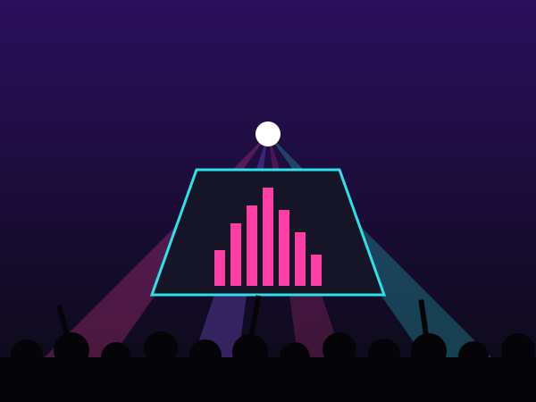

The Festivals
A breakdown of the SoCal and Vegas festivals I care about most: where they are, when they happen, and what makes each one different.
Go to Festivals →Welcome to Bass & Lights, my corner of the internet for everything festival and concert related. I'm a DJ and a raver based in Southern California, and this site is where I keep track of the events I've been to, the artists and genres I can't stop listening to, and everything I've learned about surviving a three-day weekend in the desert.
See my festivals
A breakdown of the SoCal and Vegas festivals I care about most: where they are, when they happen, and what makes each one different.
Go to Festivals →From house to dubstep to drum & bass: the sounds that move me, how hyped I get for each one, and my all-time top sets countdown.
Go to Artists →What to pack, how to protect your hearing, and answers to the questions every first-timer asks before their first festival.
Go to the Guide →There's nothing like the moment the lights drop and 50,000 people react to the same beat at the same time. Festivals are where I found the music that got me into DJing, where I've met some of my best friends, and where I learned how much the little details (good shoes, water, ear protection) make or break your night.
This site was last updated on .